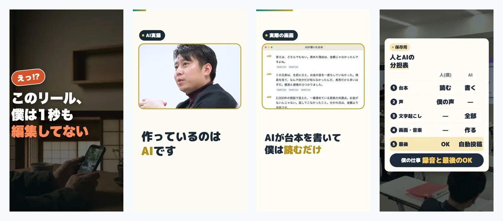
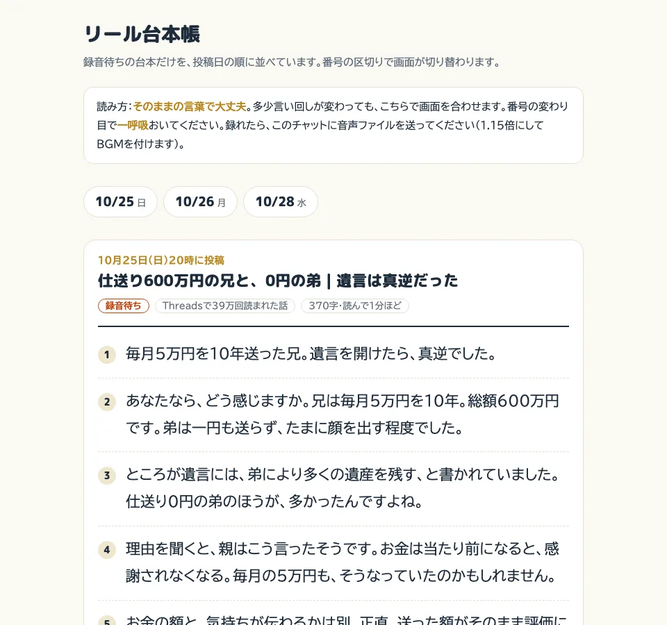

コメント「AI」の1枚
このリール、AIが作って、AIが投稿しています

台本も、画面も、音楽も、投稿もAI。僕がやるのは、録音と最後のOKだけです。どこをAIに渡して、どこを人が持っているのかを1枚にしました。
週4本月・水・金・日の夜8時
編集0秒画面も音楽もAI
約1分僕が録音する長さ（1本）
数字は実際に動いている仕組みのものだけを書いています。
全体像：左がAI、右が人
AIがやる
人（僕）がやる
1題材：何を話すか
Threadsで伸びた投稿から選ぶ僕が喋った録音からも、2〜3本の話に分ける
思いついたことを喋る5〜10分、スマホに向かって話すだけ
2台本
出だし3秒の型を選んで書く事実は元の話だけ。言ってはいけない言葉もここで止める。画面の割り振りまで決める
読んで、直したいところだけ言う「ここ、パンチがない」で書き直してくれる
3録音
台本を1枚のページに並べる投稿日の順。録り終えたものは自動で消える
読んで録る1本1分ちょっと。言い回しが少し変わっても大丈夫
4動画
声に合わせて画面を切り替える図解、相談の様子（相談者はモザイク）、実際の画面、BGM、表紙、投稿文まで
なし
5確認
はみ出し・長さ・言葉をチェック通らなければ投稿しない
見て「OK」と言うOKがないものは、時間が来ても出ない
6投稿
夜8時にInstagram、次の日にYouTubeコメントの合言葉にはDMで資料を返す
なし
7学び準備中
伸びた回と伸びなかった回を比べる出だしの型・曲・題材ごとに、次の台本へ反映
何を増やすか決めるAIは案を出すだけ
僕が見ているのは、このページだけ
録音待ちの台本が、投稿日の順に並びます。番号の区切りで画面が切り替わるので、そこで一呼吸おいて読むだけです。

AIにやらせないと決めた3つ
話を作らない。台本の事実・数字・セリフは、元の話にあるものだけ。足りなければ人に聞く
出すかどうかは人が決める。どんなに出来が良くても、OKがなければ投稿されない
相談者の顔と名前は出さない。相談の映像は全面モザイク、名前の表示は切り落とす
最初は声もAIでした。「引きも弱いし、声に元気がない」と自分でダメを出して、今は僕の声で録っています。任せるところと、人が持つところを分けたら、続けられるようになりました。
あなたの会社なら、何をAIに任せますか？
3つ答えると、あなたの会社で最初に渡せる仕事が出ます。発信だけでなく、問い合わせ・日程調整・面談後の記録なども入っています。
3問で、最初に渡す仕事を見る
営業と事務をAIで回す仕組みを見る
「うちの場合は？」と思ったら、InstagramのDMに会社名と、いちばん時間を取られている仕事を一言ください。僕が直接お返事します。
森川満章｜お金のプロ×AI 相談2,000件・講演3,000人
Instagram @morikawa_fulfull